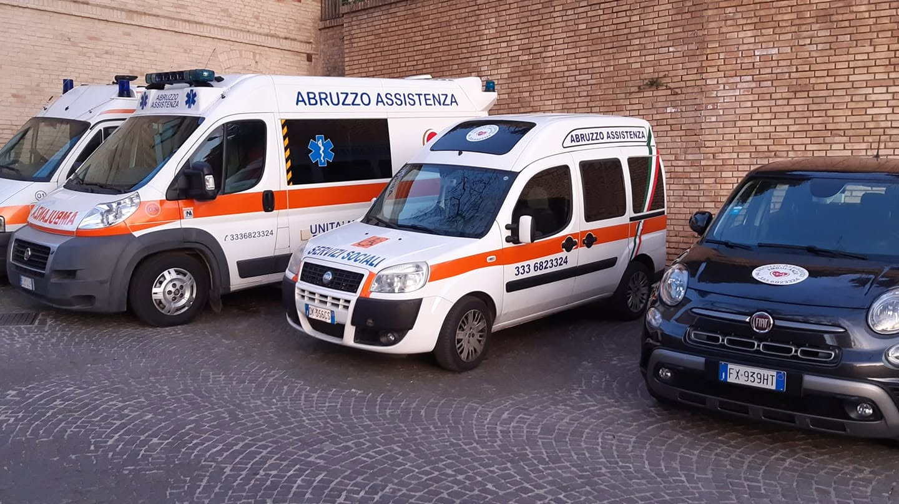

Dimissioni, ricoveri e visite
Per raggiungere una struttura sanitaria o tornare a casa.

Organizziamo trasporti per dimissioni, visite, terapie, trasferimenti e altre esigenze di mobilità assistita.
Esigenze diverse, un punto di contatto.
Il servizio si organizza insieme.
Per raggiungere una struttura sanitaria o tornare a casa.
Continuità negli spostamenti per appuntamenti periodici.
Un percorso da valutare in base alle esigenze della persona.
Percorsi dall’Abruzzo verso altre regioni italiane.
Partenze e rientri da concordare sull’intera tratta.
Per organizzatori di manifestazioni e iniziative sul territorio.
Sulmona e Pescara sono i punti di partenza dei mezzi, all’interno della nostra regione.
Non indicano due sedi legali. La partenza viene organizzata in base alla tratta, alle esigenze del trasporto e alla disponibilità.

Servizio, partenza, destinazione e data orientativa: bastano pochi dettagli per iniziare.
Verifichiamo percorso, disponibilità e modalità adatte alla richiesta.
Concordiamo organizzazione e condizioni. Solo allora il servizio è confermato.
Le risposte alle domande più frequenti.
Puoi richiedere una valutazione. Specifica se la persona deve restare sulla carrozzina durante il viaggio: verificheremo il mezzo e le dotazioni effettivamente disponibili prima di confermare.
Indicaci tratta e data desiderata. La disponibilità dipende dal servizio richiesto e dall’organizzazione dei mezzi; viene comunicata da un referente.
Sì, puoi chiedere informazioni per tratte nazionali e internazionali. Ogni percorso viene valutato e concordato prima della conferma.
Comunica giorni, orari, destinazione e frequenza indicativa. Valutiamo insieme la possibilità di organizzare gli spostamenti nel tempo.
Contattaci appena conosci data e tratta. Non è previsto sul sito un anticipo minimo garantito: la possibilità di organizzare il servizio va verificata.
No. Il messaggio apre un primo contatto. Il trasporto è confermato solo dopo l’accordo esplicito con l’associazione su disponibilità e dettagli.
Indicaci cosa serve. Valutiamo insieme disponibilità, modalità e dettagli del servizio.